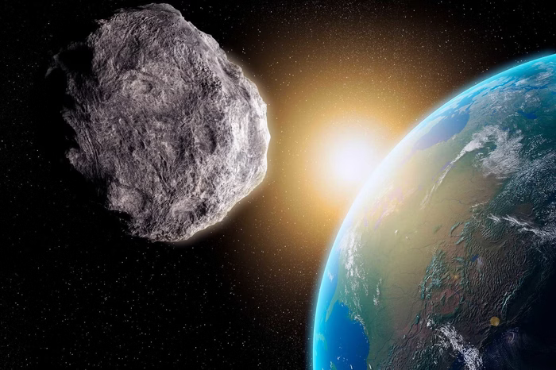

Asteroide tem 2,3% de chance de cair na Terra
O risco de impacto do asteroide 2024 YR4 em 2032 aumentou, mas novas observações devem refinar os cálculos e reduzir a chance de colisão
O asteroide 2024 YR4, identificado no final de dezembro, teve sua probabilidade de impacto com a Terra revisada para cima. De acordo com a Agência Espacial Europeia (ESA), as chances de colisão no 22 de dezembro de 2032 passaram de 1,3% para 2,3%, um aumento significativo. No entanto, a tendência é que essa possibilidaede diminua nos próximos meses, conforme novas observações forem feitas
